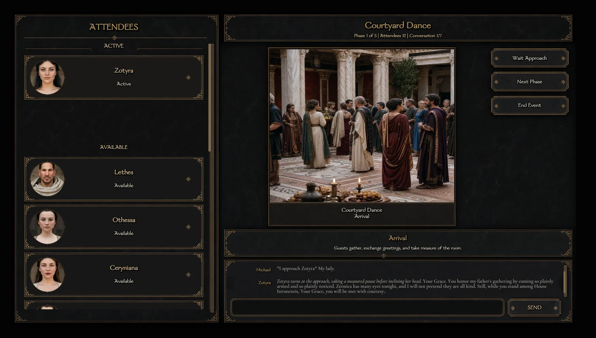

Mount & Blade II: Bannerlord · Reign
The Player’s Companion
Find your way through Reign. Learn what to do, where to go, and what changes around you.
Development guide · November 24, 2026 · Edition notes

Find your next chapter
Explore a remembered social and political world. Start with a conversation, build a household, or take a seat at court.